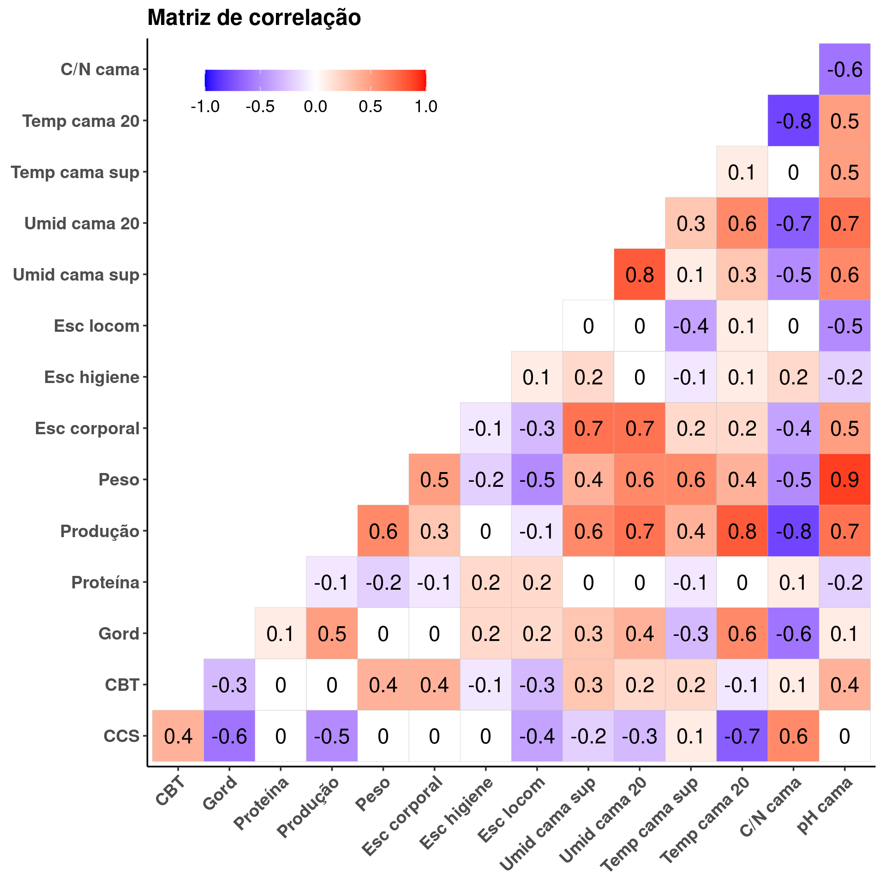
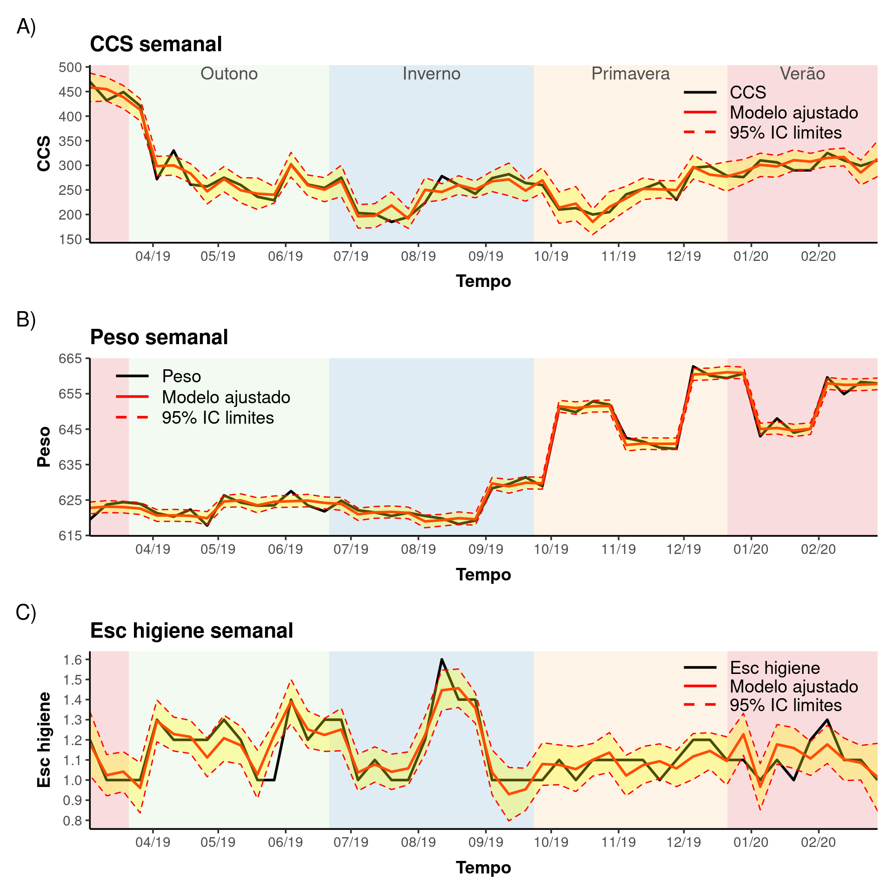
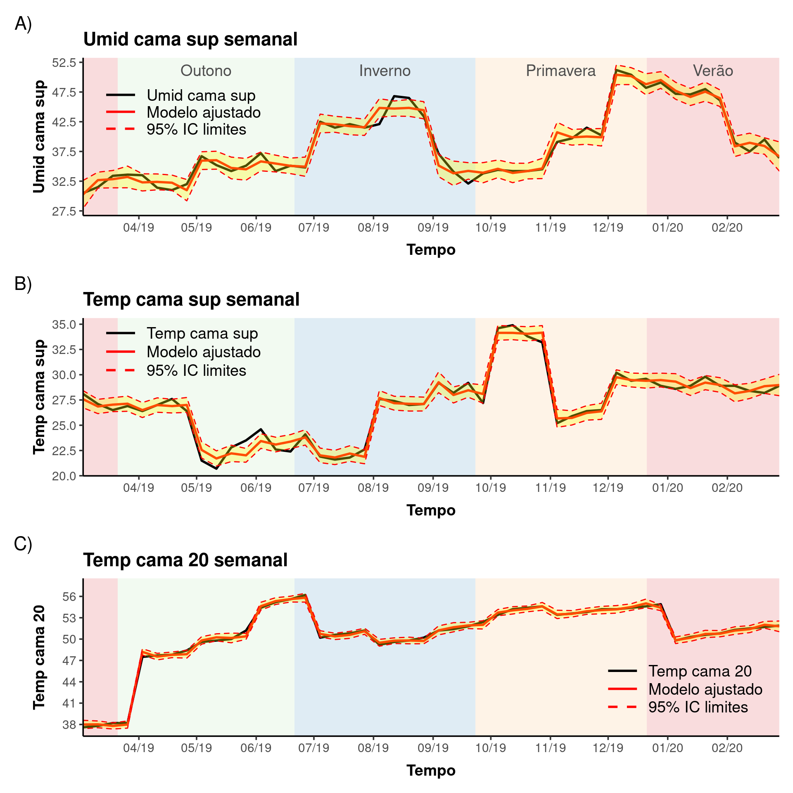

VACAS: O que entra no paper
Flavio Damasceno e Henrique Laureano
Last modification on 2022-08-12 16:34:04

Médias marginais
Estação
| Verão | Outono | Inverno | Primavera | |
|---|---|---|---|---|
| CCS | ||||
| Efeito (EP) | 293.03 (18609.97) | 343.54 (18604.06) | 251.64 (18612.08) | 239.74 (18604.58) |
| Valor-p | 0.987 | 0.985 | 0.989 | 0.99 |
| Esc higiene | ||||
| Efeito (EP) | 1.43 (36.99) | 1.39 (37.08) | 1.04 (37.09) | 0.92 (37.08) |
| Valor-p | 0.969 | 0.97 | 0.978 | 0.98 |
Mês
Peso |
Umid cama sup |
Temp cama sup |
Temp cama 20 |
|||||
|---|---|---|---|---|---|---|---|---|
| Mês | Efeito (EP) | Valor-p | Efeito (EP) | Valor-p | Efeito (EP) | Valor-p | Efeito (EP) | Valor-p |
| Mar | 622.37 (10.79) | 0 | 18.81 (131.4) | 0.886 | 30.15 (8.69) | 0.001 | 37.51 (449.98) | 0.934 |
| Abr | 620.32 (10.48) | 0 | 28.48 (134.7) | 0.833 | 29.78 (8.63) | 0.001 | 47.22 (450) | 0.916 |
| Mai | 625.58 (9.45) | 0 | 35.15 (135.13) | 0.795 | 22.97 (9.01) | 0.011 | 50.95 (450) | 0.91 |
| Jun | 625.86 (9.25) | 0 | 39.72 (136.87) | 0.772 | 23.43 (9.24) | 0.011 | 56.53 (450.1) | 0.9 |
| Jul | 622.49 (9.52) | 0 | 41.98 (135.41) | 0.757 | 21.89 (9.37) | 0.019 | 51.76 (450.14) | 0.908 |
| Ago | 619.71 (10.17) | 0 | 43.27 (135.28) | 0.749 | 27.44 (9.44) | 0.004 | 50.84 (450.12) | 0.91 |
| Set | 629.6 (10.34) | 0 | 35.16 (135.86) | 0.796 | 28.77 (9.88) | 0.004 | 51.65 (449.99) | 0.909 |
| Out | 651.16 (10.54) | 0 | 36.97 (136.4) | 0.786 | 34.32 (9.96) | 0.001 | 54.6 (449.82) | 0.903 |
| Nov | 640.08 (10.96) | 0 | 42.51 (135.47) | 0.754 | 25.58 (10.53) | 0.015 | 52.86 (449.75) | 0.906 |
| Dez | 659.65 (11.24) | 0 | 53.07 (134.82) | 0.694 | 26.11 (11.71) | 0.026 | 50.48 (449.2) | 0.911 |
| Jan | 644.12 (11.11) | 0 | 49.07 (135.37) | 0.717 | 27.12 (10.96) | 0.013 | 49.05 (449.51) | 0.913 |
| Fev | 657.02 (10.91) | 0 | 40.46 (135.55) | 0.765 | 26.98 (10.69) | 0.012 | 50.22 (449.63) | 0.911 |
Contrastes
| Efeito (EP) | Valor-p | |
|---|---|---|
| CCS | ||
| Outono - Verão | 50.51 (28) | 0.071 |
| Inverno - Verão | -41.39 (18.06) | 0.022 |
| Primavera - Verão | -53.29 (17.22) | 0.002 |
| Inverno - Outono | -91.89 (19.7) | 0 |
| Primavera - Outono | -103.8 (23.5) | 0 |
| Primavera - Inverno | -11.9 (19.97) | 0.551 |
| Esc higiene | ||
| Outono - Verão | -0.04 (0.15) | 0.777 |
| Inverno - Verão | -0.39 (0.12) | 0.002 |
| Primavera - Verão | -0.51 (0.13) | 0 |
| Inverno - Outono | -0.35 (0.09) | 0 |
| Primavera - Outono | -0.46 (0.12) | 0 |
| Primavera - Inverno | -0.12 (0.08) | 0.138 |
Efeitos marginais
| Efeito (EP) | Valor-p | |
|---|---|---|
| CCS | ||
| Temp cama sup | 1.98 (1.691) | 0.241 |
| Umid cama 20 | 6.08 (0.002) | 0 |
| Temp cama 20 | -3.89 (4.513) | 0.389 |
| pH cama | 27.17 (0.002) | 0 |
| ITU int | 0.97 (6.204) | 0.876 |
| ITU ext | -0.6 (2.822) | 0.83 |
| Esc higiene | ||
| Umid cama sup | 0.04 (0) | 0 |
| Temp cama sup | 0.03 (0) | 0 |
| Umid cama 20 | -0.02 (0) | 0 |
| Temp cama 20 | 0.07 (0) | 0 |
| pH cama | -0.11 (0) | 0 |
| ITU int | -0.01 (0) | 0 |
| ITU ext | 0.03 (0) | 0 |
| Peso | ||
| ITU ext | 0.19 (0) | 0 |
| Umid cama sup | ||
| Temp cama 20 | -0.56 (0) | 0 |
| pH cama | -0.8 (0) | 0 |
| ITU int | -0.27 (0) | 0 |
| ITU ext | 0.19 (0) | 0 |
| Temp cama sup | ||
| Umid cama 20 | 0.25 (0) | 0 |
| pH cama | 1.16 (0) | 0 |
| ITU int | -0.1 (0) | 0 |
| Temp cama 20 | ||
| Umid cama 20 | -0.07 (0) | 0 |
| pH cama | 1.97 (0.005) | 0 |
| ITU int | -0.11 (0.004) | 0 |
| ITU ext | 0.06 (0.006) | 0 |
Plots


Referências
A anaĺise foi performada com a linguagem e ambiente para computação estatística R (R Core Team 2022). Os seguintes pacotes R foram utilizados: {dplyr} (Wickham et al. 2022), {tidyr} (Wickham and Girlich 2022), {ggcorrplot} (Kassambara 2019), {ggplot2} (Wickham 2016), {lubridate} (Grolemund and Wickham 2011), {MASS} (Venables and Ripley 2002), {broom} (Robinson, Hayes, and Couch 2022), {rlang} (Henry and Wickham 2022), {patchwork} (Pedersen 2020) e {marginaleffects} (Arel-Bundock 2022).
Arel-Bundock, Vincent. 2022. marginaleffects: Marginal Effects, Marginal Means, Predictions, and Contrasts. R package version 0.5.0. https://CRAN.R-project.org/package=marginaleffects.
Grolemund, Garrett, and Hadley Wickham. 2011. “Dates and Times Made Easy with lubridate.” Journal of Statistical Software 40 (3): 1–25. https://www.jstatsoft.org/v40/i03/.
Henry, Lionel, and Hadley Wickham. 2022. rlang: Functions for Base Types and Core R and ’Tidyverse’ Features. R package version 1.0.3. https://CRAN.R-project.org/package=rlang.
Kassambara, Alboukadel. 2019. ggcorrplot: Visualization of a Correlation Matrix Using ’ggplot2’. R package version 0.1.3. https://CRAN.R-project.org/package=ggcorrplot.
Pedersen, Thomas Lin. 2020. patchwork: The Composer of Plots. R package version 1.1.1. https://CRAN.R-project.org/package=patchwork.
R Core Team. 2022. R: A Language and Environment for Statistical Computing. Vienna, Austria: R Foundation for Statistical Computing. https://www.R-project.org/.
Robinson, David, Alex Hayes, and Simon Couch. 2022. broom: Convert Statistical Objects into Tidy Tibbles. R package version 0.8.0. https://CRAN.R-project.org/package=broom.
Venables, W. N., and B. D. Ripley. 2002. Modern Applied Statistics with S. Fourth Edition. New York: Springer-Verlag. ISBN 0-387-95457-0. https://www.stats.ox.ac.uk/pub/MASS4/.
Wickham, Hadley. 2016. ggplot2: Elegant Graphics for Data Analysis. Springer-Verlag New York. ISBN 978-3-319-24277-4. https://ggplot2.tidyverse.org.
Wickham, Hadley, Romain François, Lionel Henry, and Kirill Müller. 2022. dplyr: A Grammar of Data Manipulation. R package version 1.0.9. https://CRAN.R-project.org/package=dplyr.
Wickham, Hadley, and Maximilian Girlich. 2022. tidyr: Tidy Messy Data. R package version 1.2.0. https://CRAN.R-project.org/package=tidyr.